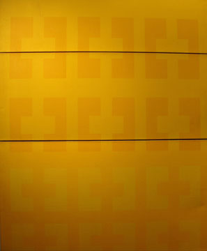
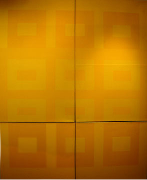

> Artists > David Lee > Images
David Lee

Images | Bio

David Lee, Continuum, 1965
Acrylic on canvas, 7: 42 x 28”

David Lee, A Trifid of Small Beer, 1964
Acrylic on canvas, 1: 14 x 52¼”, 1: 21 x 52¼”, 1: 28¼ x 52¼”

David Lee, A Baker’s Dozen of Plastic Easter Eggs (for Fusar), 1964
Acrylic on canvas, 2: 30 x 49¼”, 2: 30 x 24¾”
Images | Bio
|